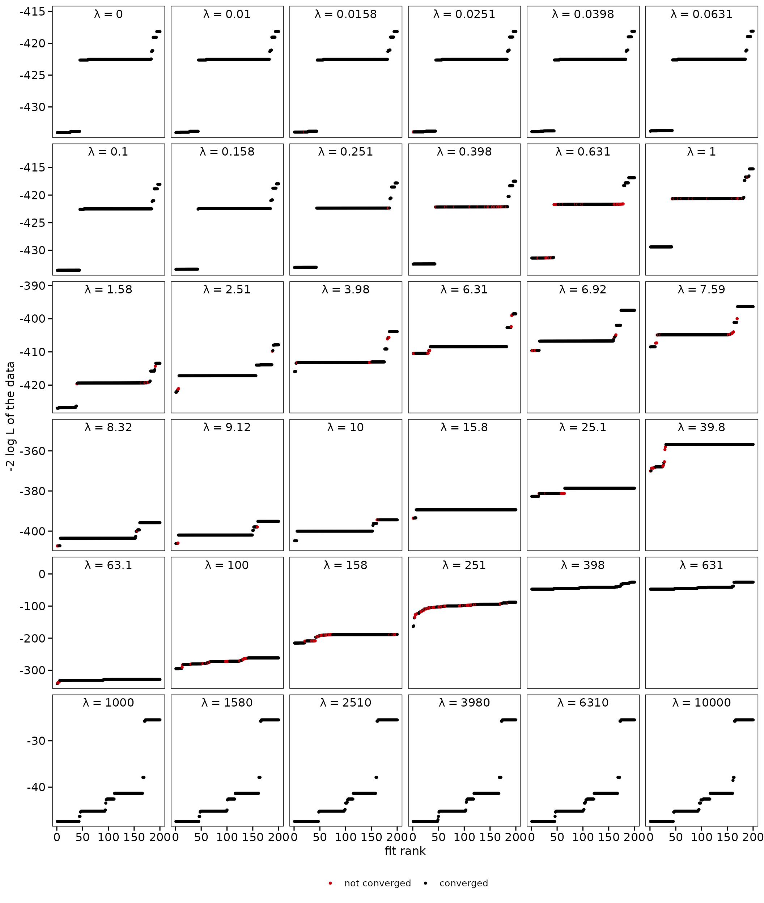
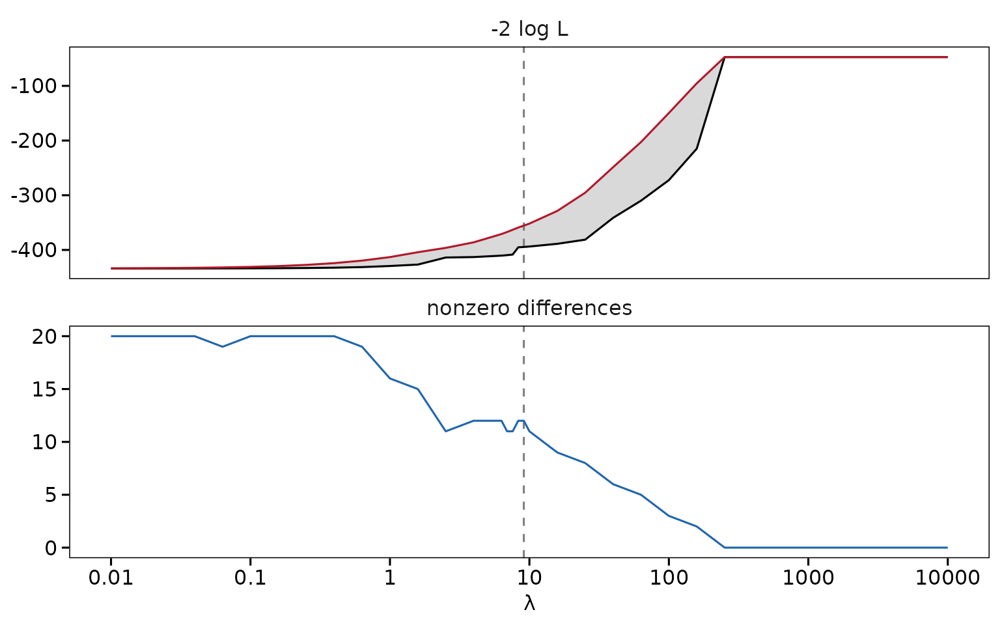
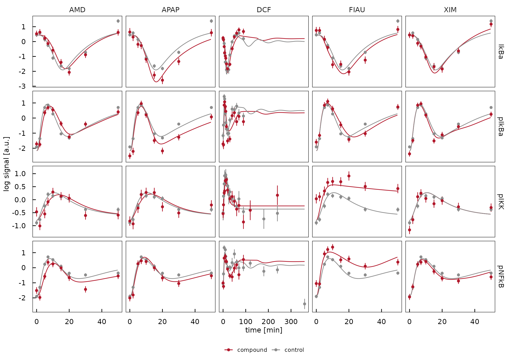
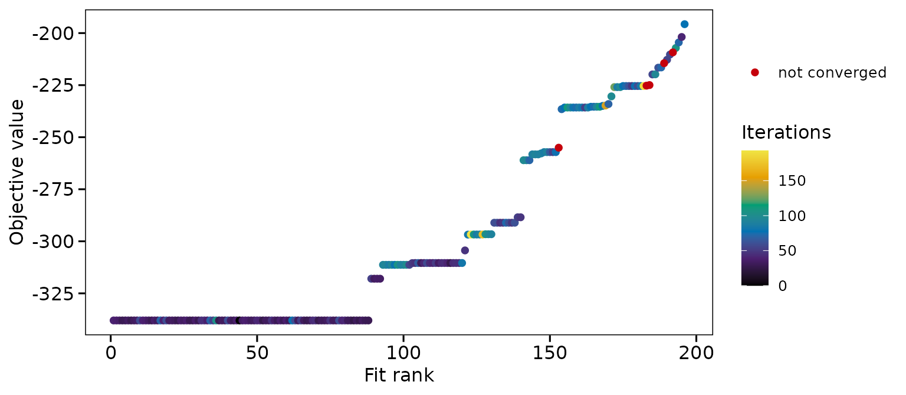
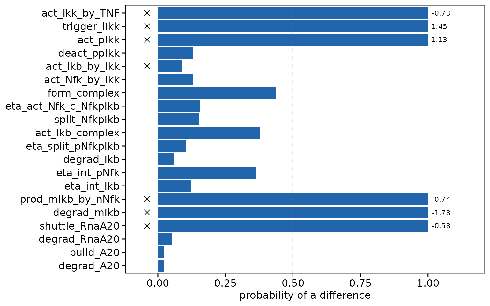
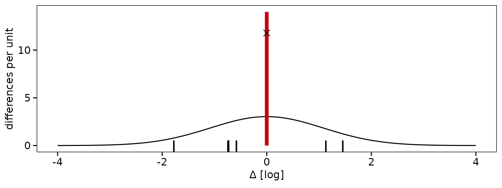
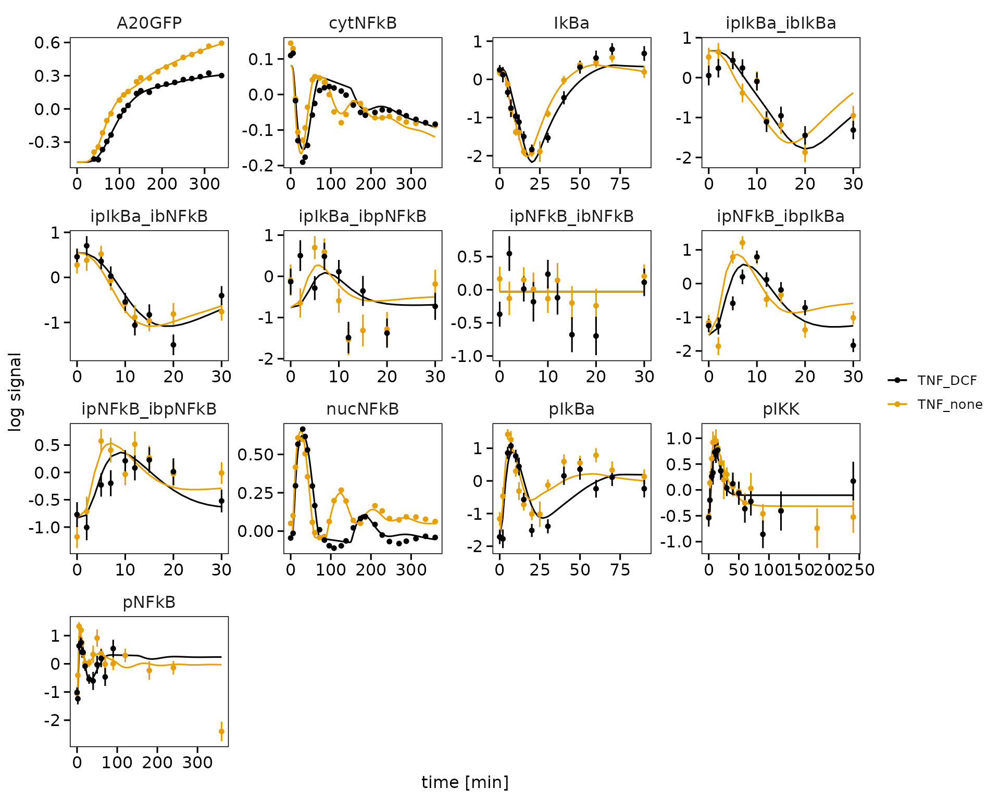

8. Sparse deviations
Source:vignettes/articles/guide-sparse-deviations.Rmd
guide-sparse-deviations.RmdOppelt et al. [1] also measured the TNFα
response of HepG2 cells under diclofenac (DCF). Which rate constants
does DCF change? The publication selected differences by an L1 scan and
a likelihood ratio test [2]. This chapter repeats the scan
and answers the same question with spike-and-slab random effects. Model:
the reduced model of Profile
likelihood; random effects and em(): Nonlinear mixed-effects models.
dcf.R computed the fits; the chapter loads them.
The second part lists the sparse random-effect distributions and what their fits report; derivations: Methods > Sparsity priors.
Data and model
TNFα-stimulated cells of the first blot scale, without
(TNF_none) and with DCF (TNF_DCF).
# the TNFα-stimulated cells of the first blot scale, without compound and with DCF
cellsDCF <- subset(raw, cell == "HepG2" & scale == 1 & treatment == "TNF" & compound %in% c("no", "DCF"))
cellsDCF$compound[cellsDCF$compound == "no"] <- NA
cellsDCF$condition <- ifelse(is.na(cellsDCF$compound), "TNF_none", "TNF_DCF")
dataDCF <- as.datalist(cellsDCF[c("name", "time", "value", "sigma", "condition", "treatment", "compound")],
splitBy = "condition", keepCovariates = c("treatment", "compound"))With DCF an estimated rate constant \(k\) becomes \(\log k + \Delta_k\). insert()
with x ~ 1 + (1 | gr(compound, dist = spikeSlab())) writes
each \(\Delta_k\) as a random effect
eta_<k>_DCF, 0 without compound; the L1 scan treats
the same symbols as parameters. 24 differences, as in the
publication:
# every rate constant the publication does not fix has a change by DCF, 24 as in the publication,
# a spike-and-slab random effect over the compound; for the spike and slab without the four rate
# constants of the gauge, whose change equals that of a partner; second derivatives forward over
# reverse for em()
ratesDCF <- setdiff(getParameters(odemodel(reactionsReduced, compile = FALSE)),
c(reactionsReduced$states, names(fixedReduced), "Vnuc", "TNF", "dose_TNF"))
dm <- c("forward", "reverse", "forward-reverse")
modelDCF <- odemodel(reactionsReduced, events = events, modelname = "oppelt_dcf_ode", compile = FALSE,
derivMode = dm)
# solves without sensitivities at atol 1e-12: at atol 1e-10 they can leave the positive orthant, where
# the complex formation is unstable; those with sensitivities hold at 1e-10
xDCF <- Xs(modelDCF, options = list(atol = 1e-12, rtol = 1e-8), optionsSens = list(atol = 1e-10))
gDCF <- Y(observablesReduced, xDCF, modelname = "oppelt_dcf_obs", compile = FALSE, derivMode = dm)
eDCF <- Y(errors, gDCF, modelname = "oppelt_dcf_err", compile = FALSE, derivMode = dm)
trafoBase <- eqnvec() |>
define("x <- x", x = setdiff(getParameters(xDCF, gDCF, eDCF), reactionsReduced$states)) |>
define("x <- y", x = names(fixedReduced), y = fixedReduced) |>
define("x <- y", x = names(resting), y = resting) |>
insert("x <- exp(x)", x = .currentSymbols) |>
define("TNF <- 0") |>
branch(covariates(dataDCF)) |>
define("dose_TNF <- 1")
ratesSS <- setdiff(ratesDCF, names(gauge))
pDCF <- P(insert(trafoBase, x ~ 1 + (1 | gr(compound, dist = spikeSlab())), x = ratesDCF),
method = "explicit", modelname = "oppelt_dcf_par", compile = FALSE, derivMode = dm)
pSS <- P(insert(trafoBase, x ~ 1 + (1 | gr(compound, dist = spikeSlab())), x = ratesSS),
method = "explicit", modelname = "oppelt_dcfss_par", compile = FALSE, derivMode = dm)
compile(gDCF, xDCF, pDCF, pSS, eDCF, output = "oppelt_dcf", cores = getOption("dMod2.cores"))
prdDCF <- gDCF * xDCF * pDCFL1 scan
The penalty \(\lambda \sum_k \lvert
\Delta_k \rvert\) [2], [3] is added to \(-2 \log L\); trustL1() sets
differences exactly to 0 (L1 penalties).
Four rate constants enter the data only as a product with a partner:
uptake with act_Ikk_by_TNF,
prod_Ikb with prod_mIkb_by_nNfk,
build_RnaA20 with build_A20, and
split_NfkIkb with eta_split_pNfkpIkb. The
reduced model fixes the four as gauge (Symmetries), so their differences are
0, and both methods share the other 20 candidates. The publication
penalized all 24 and set partners aside after the scan.
Each \(\lambda\), 0 and 31 values
from \(10^{-2}\) to \(10^4\) evenly on the log scale, runs 1000
starts around the reduced fit, then starts from the best fits of the
other \(\lambda\) until none improves.
dcf.R runs the fits through fitTasks() (Remote computing):
# The L1 scan over the 20 candidates of the spike and slab, the changes of the four partners of the
# gauge at 0: the penalty lambda |eta| on every candidate, lambda = 0, 31 values from 1e-2 to 1e4
# evenly on the log scale and four more between 10^0.8 and 10, per lambda 1000 starts, the
# population parameters drawn around the fit of the reduced model with sd 1, the changes at 0, the
# first start the fit itself
zeroDCF <- setNames(numeric(length(changesDCF)), changesDCF)
changesL1 <- paste0("eta_", ratesSS, "_DCF")
offL1 <- setdiff(changesDCF, changesL1)
stopifnot(all(changesL1 %in% changesDCF))
lambdasDCF <- sort(c(0, 10^seq(-2, 4, by = 0.2), 10^seq(0.84, 0.96, by = 0.04)))
startsL1 <- msParframe(c(initDCF, zeroDCF), n = 1000, seed = 12,
sd = c(setNames(rep(1, length(initDCF)), names(initDCF)), zeroDCF))
startL1 <- function(i) unlist(startsL1[i, c(names(initDCF), changesL1)])
# a start vector with the population parameters and candidates of `argument`, the others at the start
fullStart <- function(argument) {
start <- c(initDCF, zeroDCF[changesL1])
shared <- intersect(names(argument), names(start))
start[shared] <- argument[shared]
start
}
# the penalized fit of a task, with -2 log L without the penalty
penalizedDCF <- function(task) {
fit <- try(trustL1(objDCF, task$start, mu = zeroDCF[changesL1], lambda = task$lambda, rinit = 1,
rmax = 10, iterlim = 1000, fixed = c(gaugeReduced, zeroDCF[offL1]),
tolControl = tolerances), silent = TRUE)
if (inherits(fit, "try-error")) return(NULL)
list(lambda = task$lambda, argument = fit$argument,
value = objDCF(c(fit$argument, zeroDCF[offL1]), fixed = gaugeReduced, deriv = FALSE)$value,
converged = fit$converged)
}
# the candidates of a set fitted without penalty, the other changes at 0
refitDCF <- function(task) {
off <- setdiff(changesDCF, task$set)
start <- task$start[setdiff(names(task$start), off)]
fit <- try(trust(objDCF, start, rinit = 1, rmax = 10, iterlim = 1000,
fixed = c(gaugeReduced, zeroDCF[off]), tolControl = tolerances), silent = TRUE)
if (inherits(fit, "try-error")) return(NULL)
list(set = task$set, argument = fit$argument, value = fit$value, converged = fit$converged)
}
# the penalized objective of every fit in penalizedFits at `x`
penalizedAt <- function(x) vapply(penalizedFits, function(r) r$value + x * sum(abs(r$argument[changesL1])), 0)
# the fits of a list of tasks, one per task; helix.R runs them on the cluster instead
fitTasks <- function(tasks, fn)
Filter(Negate(is.null), parallel::mclapply(tasks, fn, mc.cores = getOption("dMod2.cores"),
mc.preschedule = FALSE))
# every lambda also from the five best fits of the other lambdas, evaluated at it, and from the
# five best of the lambda itself, until no lambda improves by more than 0.01
bestAt <- function() vapply(lambdasDCF, function(x) {
own <- vapply(penalizedFits, `[[`, 0, "lambda") == x
min(penalizedAt(x)[own])
}, 0)
repeat {
before <- bestAt()
lambdaOf <- vapply(penalizedFits, `[[`, 0, "lambda")
tasks <- unlist(lapply(lambdasDCF, function(x) {
value <- penalizedAt(x)
other <- which(lambdaOf != x); own <- which(lambdaOf == x)
pick <- c(other[order(value[other])][1:5], own[order(value[own])][1:5])
lapply(pick, function(i) list(start = penalizedFits[[i]]$argument[c(names(initDCF), changesL1)], lambda = x))
}), recursive = FALSE)
penalizedFits <- c(penalizedFits, fitTasks(tasks, penalizedDCF))
if (all(before - bestAt() <= 0.01)) break
}
dcfL1 <- stored("results/dcfL1.rds", "dcf.R", envir = new.env())Waterfall of the best 200 values of \(-2 \log L\) of the data, without the penalty, per \(\lambda\), the y axis shared within a row:
objectiveL1 <- dcfL1$penalized
lambdaL1 <- sort(unique(objectiveL1$lambda))
# the best 200 fits per lambda, six lambdas per row, the y axis shared within a row
best200 <- function(x) {
x <- head(x[order(x$value), ], 200)
x$rank <- seq_len(nrow(x))
x
}
waterL1 <- do.call(rbind, lapply(seq_along(lambdaL1), function(i)
cbind(best200(objectiveL1[objectiveL1$lambda == lambdaL1[i], ]), row = (i - 1) %/% 6,
col = (i - 1) %% 6, label = sprintf("lambda == %s", format(signif(lambdaL1[i], 3))))))
ggplot2::ggplot(waterL1, ggplot2::aes(rank, value)) +
ggplot2::geom_point(ggplot2::aes(color = converged), size = 0.8) +
ggplot2::geom_text(data = unique(waterL1[c("row", "col", "label")]),
ggplot2::aes(x = 100, y = Inf, label = label), parse = TRUE, vjust = 1.4,
inherit.aes = FALSE) +
ggplot2::facet_grid(row ~ col, scales = "free_y") +
ggplot2::scale_color_manual(values = c(`TRUE` = "black", `FALSE` = dMod2_colors[2]),
labels = c(`TRUE` = "converged", `FALSE` = "not converged"),
name = NULL) +
ggplot2::scale_y_continuous(expand = ggplot2::expansion(mult = c(0.05, 0.25))) +
ggplot2::labs(x = "fit rank", y = "-2 log L of the data") +
theme_dMod2() +
ggplot2::theme(strip.text = ggplot2::element_blank(), legend.position = "bottom")
Of at least 1010 fits per \(\lambda\), 11 to 57 reach the best penalized value within 0.1, a median 43; most others end at local optima or crawl and stop short.
Differences over \(\lambda\) (Fig. 2a of the publication), in color those kept at the selected \(\lambda\) (dashed):
paths <- data.frame(lambda = rep(as.numeric(rownames(dcfL1$path)), ncol(dcfL1$path)),
difference = rep(sub("^eta_(.*)_DCF$", "\\1", colnames(dcfL1$path)),
each = nrow(dcfL1$path)),
value = as.vector(dcfL1$path))
paths <- paths[paths$lambda > 0, ]
kept <- sub("^eta_(.*)_DCF$", "\\1", dcfL1$selected)
ggplot2::ggplot(paths, ggplot2::aes(lambda, value, group = difference)) +
ggplot2::geom_vline(xintercept = dcfL1$lambda, linetype = 2, color = "gray50") +
ggplot2::geom_line(data = paths[!paths$difference %in% kept, ], color = "gray75") +
ggplot2::geom_line(data = paths[paths$difference %in% kept, ], ggplot2::aes(color = difference)) +
ggplot2::scale_x_log10(breaks = 10^(-2:4), labels = trimws(format(10^(-2:4), scientific = FALSE, drop0trailing = TRUE))) +
ggplot2::labs(x = expression(lambda), y = expression(Delta ~ "[log]"), color = NULL) +
theme_dMod2()
Over \(\lambda\) (Fig. 2b): \(-2 \log L\) of the data (black), plus penalty (red, penalty gray), and the number of nonzero differences:
scan <- dcfL1$scan[dcfL1$scan$lambda > 0, ]
curves <- rbind(data.frame(lambda = scan$lambda, value = scan$data, panel = "-2 log L", curve = "data"),
data.frame(lambda = scan$lambda, value = scan$data + scan$penalty, panel = "-2 log L",
curve = "data + penalty"),
data.frame(lambda = scan$lambda, value = scan$changes, panel = "nonzero differences",
curve = "count"))
ggplot2::ggplot(curves, ggplot2::aes(lambda, value)) +
ggplot2::geom_ribbon(data = data.frame(lambda = scan$lambda, lo = scan$data,
hi = scan$data + scan$penalty, panel = "-2 log L"),
ggplot2::aes(x = lambda, ymin = lo, ymax = hi), inherit.aes = FALSE,
fill = "gray85") +
ggplot2::geom_vline(xintercept = dcfL1$lambda, linetype = 2, color = "gray50") +
ggplot2::geom_line(ggplot2::aes(color = curve)) +
ggplot2::scale_color_manual(values = c(data = "black", `data + penalty` = "#b2182b",
count = "#2166ac"), guide = "none") +
ggplot2::scale_x_log10(breaks = 10^(-2:4), labels = trimws(format(10^(-2:4), scientific = FALSE, drop0trailing = TRUE))) +
ggplot2::facet_wrap(~ panel, ncol = 1, scales = "free_y") +
ggplot2::labs(x = expression(lambda), y = NULL) +
theme_dMod2()
The differences kept at each \(\lambda\) are refitted without penalty, the others at 0, from the best penalized fits and from 300 or more starts around the reduced fit. Selected is the largest \(\lambda\) whose refit the likelihood ratio test against all 20 candidates does not reject at \(p < 0.001\), as in the publication:
# the likelihood ratio test of the set of each lambda against all candidates, the selection that
# of the largest lambda not worse at p < 0.001, the threshold of the publication
valueOf <- function(set) bestRefit(set)$value
scanDCF <- data.frame(lambda = lambdasDCF, changes = lengths(keptDCF),
data = vapply(bestDCF, `[[`, 0, "value"),
penalty = lambdasDCF * vapply(bestDCF, function(r) sum(abs(r$argument[changesL1])), 0),
refit = vapply(keptDCF, function(set) if (length(set)) valueOf(set) else NA_real_, 0),
row.names = NULL)
scanDCF$p <- pchisq(scanDCF$refit - valueOf(changesL1), df = length(changesL1) - scanDCF$changes,
lower.tail = FALSE)
scanDCF$p[scanDCF$changes == length(changesL1)] <- 1
lambdaDCF <- max(scanDCF$lambda[!is.na(scanDCF$p) & scanDCF$p >= 0.001])
selectedL1 <- keptDCF[[as.character(lambdaDCF)]]
pathDCF <- t(vapply(bestDCF, function(r) r$argument[changesL1], zeroDCF[changesL1]))The test rejects from \(\lambda =
10\) on, with 11 differences and 35 in \(-2 \log L\) above the refit with all 20;
the publication, with 24 candidates, rejected from \(\lambda = 10\) on, with 11 differences and
34. Kept at \(\lambda = 9.12\) are 12
differences: act_Ikb_by_Ikk, act_Ikk_by_TNF,
act_Nfk_by_Ikk, act_pIkk,
build_A20, degrad_mIkb,
eta_int_Ikb, eta_int_pNfk,
eta_split_pNfkpIkb, prod_mIkb_by_nNfk,
shuttle_RnaA20 and trigger_iIkk.
Of the 11 differences at \(\lambda =
10\) the publication kept seven as independent [1]: it
dropped uptake, prod_Ikb,
eta_int_pNfk and act_Nfk_by_Ikk and took
shuttle_RnaA20 in place of build_A20. The
seven refitted alone, against the estimates and 95 % intervals of the
publication:
publicationDCF <- dcfL1$publication
publicationDCF$refit <- unname(dcfL1$refitPublication$argument[paste0("eta_", publicationDCF$rate, "_DCF")])
publicationDCF
#> rate value lower upper refit
#> 1 act_Ikk_by_TNF -0.72 -0.98 -0.46 -0.67023204
#> 2 trigger_iIkk 1.56 1.10 2.05 1.58838930
#> 3 act_pIkk 0.91 0.57 1.27 1.18094333
#> 4 act_Ikb_by_Ikk -0.94 -1.66 -0.45 -0.04692231
#> 5 prod_mIkb_by_nNfk -0.83 -0.94 -0.73 -0.75843442
#> 6 degrad_mIkb -1.77 -2.06 -1.50 -1.80486970
#> 7 shuttle_RnaA20 -0.96 -1.68 -0.52 -0.572995326 of the seven estimates, all but act_Ikb_by_Ikk
(-0.05), lie in the intervals of the publication. Against the refit with
all 20 candidates the seven give 28 more in \(-2 \log L\) with 13 fewer parameters, \(p = 0.01\). All seven are among the 12 kept
by the scan, against which they give 8 more with 5 fewer parameters,
\(p = 0.14\). The model with the seven
differences against the data (Fig. 2c); observables measured once in the
table:
fitPlot(prdDCF, dcfL1$refitPublication$argument, changesDCF)
fitOnce(prdDCF, dcfL1$refitPublication$argument, changesDCF)
#> name time condition prediction value sigma
#> 1 ratioNFkBIkBa 0 TNF_none 0 -0.22 0.3Spike and slab
With \(\theta_k\) the log rate constant \(k\), cells with DCF use \(\theta_k + \Delta_k\). The spike-and-slab distribution [4], [5] of a difference is
\[p(\Delta_k) = (1 - \rho)\, \delta(\Delta_k) + \rho\, \mathcal{N}(\Delta_k;\, 0, \tau^2),\]
with inclusion probability \(\rho\)
(prob_compound) and slab standard deviation \(\tau\) (tau_compound, log
scale). em() estimates \(\theta\), \(\rho\) and \(\tau\) from the likelihood with the
differences integrated out, a sum over subsets (Methods >
Sparsity priors). \(p_0 = \Pr(\Delta_k = 0
\mid y)\) is the posterior spike probability.
The candidates are the same 20 as in the L1 scan; with both partners
of a product as candidates, neither would reach a probability of one
half. dcf.R runs 1000 starts of msem() around
the reduced fit, then 200 around the best. Waterfall of the 200:
# the changes as spike-and-slab random effects: 1000 starts of msem(), the population parameters
# drawn around the fit of the reduced model with sd 1 on the log scale, the probability of a change
# starting at 0.2 and the spread at 0.5
initSS <- c(initDCF, prob_compound = 0.2, tau_compound = 0.5)
set.seed(3)
fitDCF <- msem(objSS, randomSS, initSS, fixed = gaugeReduced,
control = list(sparseFit = list(trustControl = list(tolControl = tolerances))),
fits = 1000, sd = 1, cores = getOption("dMod2.cores"))
# 200 more starts around the best fit, sd 1 as above: the waterfall of the optimum
set.seed(4)
moreDCF <- msem(objSS, randomSS, fitDCF$argument, fixed = gaugeReduced,
control = list(sparseFit = list(trustControl = list(tolControl = tolerances))),
fits = 200, sd = 1, cores = getOption("dMod2.cores"))
starts <- rbind(cbind(fitDCF$multistart, round = 1L), cbind(moreDCF$multistart, round = 2L))
if (moreDCF$value < fitDCF$value) fitDCF <- moreDCF
fitDCF$multistart <- starts
dcfSS <- stored("results/dcf.rds", "dcf.R", envir = new.env())
plotValues(dcfSS, round == 2)
dcfSS$argument[c("prob_compound", "tau_compound")]
#> prob_compound tau_compound
#> 0.4106395 1.08172301 of the 997 starts around the reduced fit and 88 of the 196 around the best end within 0.1 of the best value. With \(\rho = 0.41\) a difference is expected for 8 of the 20 rate constants; with \(\tau = 1.08\) a difference is typically a factor of 2.9. Probability of a difference, \(1 - p_0\), labeled with the difference in the most probable subset; crosses mark the seven of the publication:
probability <- dcfSS$random[, c("eta", "mode", "p0")]
probability$eta <- factor(probability$eta, levels = rev(probability$eta))
probability$publication <- probability$eta %in% publicationDCF$rate
ggplot2::ggplot(probability, ggplot2::aes(1 - p0, eta)) +
ggplot2::geom_col(fill = "#2166ac") +
ggplot2::geom_vline(xintercept = 0.5, linetype = 2, color = "gray50") +
ggplot2::geom_text(data = probability[probability$mode != 0, ],
ggplot2::aes(label = sprintf("%.2f", mode)), hjust = -0.2, size = 3) +
ggplot2::geom_point(data = probability[probability$publication, ], ggplot2::aes(x = -0.04),
shape = 4, size = 2.5) +
ggplot2::scale_x_continuous(limits = c(-0.06, 1.15), breaks = seq(0, 1, 0.25)) +
ggplot2::labs(x = "probability of a difference", y = NULL) +
theme_dMod2()
The most probable subset holds 6 differences, 6 of them among the
seven of the publication, with the same signs. Not in it:
act_Ikb_by_Ikk (\(p_0 =
0.91\)). Refitted without the slab, the subset gives 28 more in
\(-2 \log L\) than all 20 candidates,
the seven of the publication 28. Against the seven, the subset gives
0.07 more in \(-2 \log L\) with 1
parameter fewer, \(p = 0.80\). The 20
differences are exchangeable under the model: the nonzero ones against
the slab density \(\rho\, \mathcal{N}(0,
\tau^2)\) (line), the count at 0 against the expected \(20 (1 - \rho)\) (bar). With 6 nonzero
differences the figure shows gross departures from the slab, an outlier
or separate clusters, but is no test of its shape:
rho <- dcfSS$argument[["prob_compound"]]
tau <- dcfSS$argument[["tau_compound"]]
nonzero <- dcfSS$random$mode[dcfSS$random$mode != 0]
slab <- data.frame(x = seq(-4, 4, length.out = 401))
slab$density <- 20 * rho * dnorm(slab$x, 0, tau)
ggplot2::ggplot() +
ggplot2::geom_line(data = slab, ggplot2::aes(x, density)) +
ggplot2::geom_rug(data = data.frame(x = nonzero), ggplot2::aes(x), sides = "b", linewidth = 0.8,
length = grid::unit(0.08, "npc")) +
ggplot2::geom_segment(ggplot2::aes(x = 0, xend = 0, y = 0, yend = sum(dcfSS$random$mode == 0)),
linewidth = 2, color = dMod2_colors[2]) +
ggplot2::geom_point(ggplot2::aes(x = 0, y = 20 * (1 - rho)), shape = 4, size = 3) +
ggplot2::labs(x = expression(Delta ~ "[log]"), y = "differences per unit") +
theme_dMod2()
The model at the spike-and-slab estimates against the data:
parsSS <- c(dcfSS$argument[setdiff(names(dcfSS$argument), c("prob_compound", "tau_compound"))],
setNames(dcfSS$random$mode, paste0("eta_", dcfSS$random$eta, "_DCF")))
fitPlot(gDCF * xDCF * pSS, parsSS, unique(na.omit(unlist(randomEffects(pSS)$etas))))
fitOnce(gDCF * xDCF * pSS, parsSS, unique(na.omit(unlist(randomEffects(pSS)$etas))))
#> name time condition prediction value sigma
#> 1 ratioNFkBIkBa 0 TNF_none 0 -0.22 0.3L1 scan and spike and slab
Both methods see the same data, model, prior and 20 candidates:
| method | differences | -2 log L | p against all 20 |
|---|---|---|---|
| L1 scan and test | 12 | -414.40 | 0.012 |
| spike and slab | 6 | -405.95 | 0.014 |
| publication | 7 | -406.01 | 0.009 |
| all candidates | 20 | -434.04 | 1.000 |
The spike and slab is faster and free of shrinkage. It needs one multistart, no scan over \(\lambda\) and no refits. The penalty shrinks every kept difference toward 0, at the selected \(\lambda\) by a median 0.05 on the log scale against the refit without the penalty, more at larger \(\lambda\); the spike and slab leaves the size of a difference to the slab, and the spike-and-slab differences lie a median 0.03 from the refit of the same subset. The most probable subset lies within the 12 differences the scan keeps and fits the data not worse than they do, \(p = 0.21\) for the 6 others. The L1 scan only tests subsets that are the penalized optimum at some \(\lambda\); the spike and slab weighs every subset (Methods > Selection of deviations). The fit reports the most probable subset; the differences with \(p_0 < 0.5\), the median probability model, which predicts best under broad conditions [6], are the same here.
Sparse random-effect distributions
gr(group, dist = ) sets the random-effect distribution.
Besides normal(), two give deviations exactly zero unless
the data need them:
| distribution | a deviation \(\eta\) of a group | hyperparameters |
|---|---|---|
spikeSlab() |
\(0\) with probability \(1 - \rho\), else \(\mathcal{N}(0, \tau^2)\) |
prob_<grouping>,
tau_<grouping>
|
dirichletProcess() |
cluster value: \(0\) for the population cluster, else one \(\mathcal{N}(0, \tau^2)\) draw |
concentration_<grouping>,
tau_<grouping>
|
Hyperparameters are shared by the symbols of a term (_1,
_2, … for several terms of one grouping) and estimated
unless given, as in spikeSlab(tau = 0.5). Normal and sparse
random effects of one grouping combine;
em(method = "focei") fits all.
Fitting sparse random effects
em(method = "focei") integrates sparse random effects by
the Laplace approximation at the joint mode of a group, exactly where
possible, and by expectation consistent (EC) approximation where the
data link a Dirichlet-process effect to another factor or the subset sum
exceeds the budget. Fixed effects and hyperparameters move in one trust
region. fit$coupling is
"expectationConsistent" if a group needed EC, else
NULL. Methods: Methods >
Approximate marginal, Methods
> Expectation consistent approximation and Methods >
Joint trust region.
entry of control$sparseFit
|
default | controls |
|---|---|---|
maxOuter |
200 |
joint trust-region iterations, all runs |
trustControl |
rinit = 1, rmax = 10,
ftol = 1e-10, mtol = 1e-5
|
joint trust region, as trust()
|
Other entries are an error. The DCF fit passes the
tolerances of Setting up
models in trustControl. A run stopping short of
mtol restarts while runs lower \(-2 \log L\) by more than mtol.
msem() perturbs concentrations and slab standard deviations
on log scale, probabilities on logit scale.
Reported structure
The fit reports the most probable subset (spike and slab) or
partition (Dirichlet process): spike deviations exactly zero, slab
deviations the posterior mean given the structure (Methods >
Reported structure). fit$random has a row per group and
random effect:
-
mode, this value; -
se, posterior standard deviation over spike and slab; - spike-and-slab and Dirichlet process:
cluster, 0 for the population value, 1, 2, … for deviating groups or clusters in group order, andp0, posterior probability of zero deviation; -
data, whether the random effect reaches data of the group, where some do not.
A sparse random effect reaching no data of the group rests at 0 with
the prior standard deviation and, for spike and slab, \(p_0 = 1 - \rho\). fit$slab
lists probabilities, concentrations and slab standard deviations, each
with term symbols, estimate and whether fixed.
Standard errors
With spike-and-slab random effects fit$hessian is
NULL; vcov() inverts
fit$information, the empirical information of the group
scores plus the expected information of the conditions without random
effects and the priors (hessian = "expected"). It needs
more groups than parameters, or those terms for the other directions;
otherwise vcov() is an error and standard errors are
NA. fit$information is not a Hessian of the
marginal and does not detect saddle points. The DCF fit has one group,
too few for the empirical information, and the intervals are missing.
dirichletProcess() fits have neither;
confint(method = "profile") gives intervals. Details: Methods >
Standard errors.
Dirichlet-process random effects
With gr(group, dist = dirichletProcess()) groups and
population value form clusters; the concentration \(\alpha\) sets how readily a group opens a
new one. The population cluster has deviation zero, every other cluster
one common deviation from \(\mathcal{N}(0,
\tau^2)\). \(\alpha\) and \(\tau\) are estimated by marginal maximum
likelihood in one fit.
method = "focei" sums exactly over partitions of up to
14 groups. method = "saem" draws partitions, allows normal
but no other sparse random effects alongside, and reports the most
frequent partition of the last window iterations after
burn-in, with standard error valueSE of \(-2 \log L\).
control$saem$particles sets the importance-sampling
particles, default 500; converged says whether burn-in
ended by the drift test. An SAEM fit has no gradient, Hessian or
empirical information. Details: Methods
> Sparsity priors.
Reference: randomEffects(), spikeSlab(),
dirichletProcess(), em(), msem(),
plotValues(), plotTrace(),
plotRandomEffects(), plotPars()
← 7. Nonlinear mixed-effects models | 9. Alignment of relative data measurements →